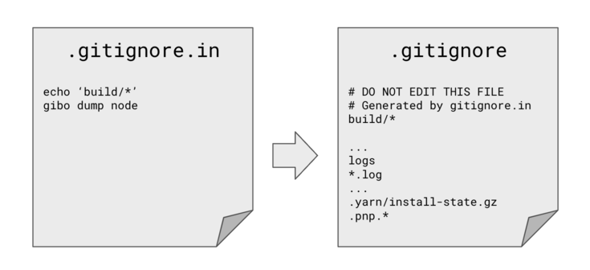

.gitignore generator for your project
gitignore.in is a tool to generate .gitignore files for your projects.
.gitignore.in file stores the target of gibo and gitignore.io. You can generate a .gitignore file by running the gitignore.in command.

Download the binary from the releases page https://github.com/gitignore-in/gitignore-in/releases
And place it in a directory that is in the PATH.
You can install gitignore-in using the Homebrew package manager.
$ brew tap gitignore-in/gitignore-in
$ brew install gitignore-in
$ gitignore.in
This will generate a .gitignore.in and .gitignore file in the current directory in first time.
And you can edit .gitignore.in file and run gitignore.in command again. Then .gitignore file will be updated.
Repository: https://github.com/gitignore-in/gitignore-in